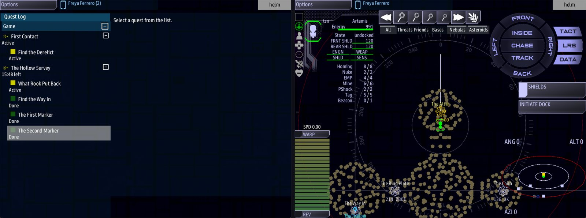

Class 4, Lecture 7 - Quests through a ruin¶
What you will have at the end¶
The Hollow has a story of its own.
The quest list sends the ship to the way in, then to the altar, then to a place the crew has to be told about. There a second recording plays. Comms decides to take aboard what the first survey team put back, and the game is won. Every step pays. Twenty minutes with the job not done, and the game is lost.
Science has something to read at the altar and at the niche.

The Hollow Survey with its steps under it, and Helm in The Vault, at The Altar.You will add to mission.amd. You will not touch story.mast.
Today the ship does all of it. Nobody leaves the ship until Lecture 8.
The video¶
About 8 minutes. Subtitles are available in the player.
Before you start¶
MyRuinas Lecture 6 left it: The Hollow, with its places, Surveyor Rook and his three recordings, the side story The One Who Stayed, and the cutscene.mission.amdis 304 lines long, andstory.masthas the card from Lecture 6.sbs lint MyRuinsaysclean.- You have done Class 1, Lecture 9 (an arc, its steps,
Then: reveal,Win:,Lose:) and Class 2, Lecture 5 (a step that an answer finishes). - VS Code with the mission folder open, a command prompt open in
C:\Cosmos\data\missions, and the game closed.
This lecture adds a Science console to the line that starts the game:
If you did Lecture 4's exercise, you have three records this page is about to replace.
| Record | What to do with it now |
|---|---|
| The beat Marker Two | Delete it. Today's last step places that call |
| The quest What Rook Left | Delete it. Today's arc is the story |
| The scene Rook at the Niche | Delete it. Step 5 has you type a new one with the same key |
The two lines you added to The Niche, and the scene In the Niche, can stay.
Step 1 - What an episode is¶
Storm's Beacon is a shipped campaign built out of ruins like yours. Each ruin in it is one episode, and every episode is the same chain:
| Link in the chain | What the crew does | What it is in the file |
|---|---|---|
| The approach | Comes up to the way in | A step that finishes when the ship gets there |
| A call | Hears from somebody who knows the place | A beat, or a step's Action: |
| A room | Flies to a named place inside | A step that finishes when the ship gets there |
| A call, a room, a call... | As many times as the ruin has places | The same two things again |
| The piece | Takes away what the ruin was hiding | A step that waits for a word |
You know every part of that already. A step that finishes when the ship gets somewhere is
Done when: reach, from Class 1. A call is Lecture 4. A step that waits for a word is
Done when: signal, from Class 1. This lecture puts them in a row, inside a ruin.
What a ship can do in your mission today, and what has to wait:
| Part of an episode | In your mission today |
|---|---|
| A step that finishes when the ship reaches a place | Yes. Steps 3 and 4 |
| A call when the ship reaches a place | Yes. You did it in Lecture 4 |
| A last step that waits for a word | Yes. Step 5 |
| An answer on Comms sends the word | Yes. Step 5 |
| A crew member takes the piece by hand, and that sends the word | Lecture 8 |
| Science reads something at a place | Yes. Step 6 |
| A win and a loss | Yes. Step 2 |
| Jumping to another star system to find the ruin | Class 5 |
In Storm's Beacon the last word is sent when the piece has been taken out of the ruin. The game sends that word itself, for any ruin, once a place in it holds a thing to take: Lecture 5 teaches that, and Lecture 8 puts it to work. Today the word comes from Comms, so the story ends on an answer the crew gives.
Step 2 - The story's heading¶
Open mission.amd and find The One Who Stayed in the Quests section. It is the last
record there, unless you did Lecture 5 before Lecture 6. Leave one blank line below its
description, and type:
### [The Hollow Survey](survey)
---
Arc
Scope: shared
Starts when: at once
Fails when: 20 minutes
Win: The Hollow is surveyed, and what Rook put back is aboard.
Lose: The haze closed in before the survey was done.
---
 Orders from DS 1, the station you started at.
Somebody surveyed The Hollow forty years ago and left markers behind. Some of them still play when a ship comes close. Follow them, room by room.
The haze round The Hollow is thickening. Once it closes, no ship will find the way in. You have twenty minutes.
All of it is Class 1, Lectures 9 and 11. A reminder:
| Line | What it means |
|---|---|
Arc |
A heading over a run of steps |
Fails when: 20 minutes |
Twenty minutes after the game starts, the arc fails |
Win: |
When the arc is finished, the game is won. The sentence is the reason given |
Lose: |
When the arc FAILS, the game is lost. The sentence is the reason given |
 Orders from DS 1... |
The station, drawn small beside the words: who is giving these orders. starbase_command is the station's hull, the same one DS 1 is built from |
| Three paragraphs, a blank line between each | The crew reads them when they pick the arc in the quest list: who sends them, what is known, and what is at stake |
Nobody warns the crew that time is running out. So the last sentence of the description tells them the limit. Keep the haze and the clock in that last paragraph: Lecture 8 changes it.
Step 3 - The first step: the way in¶
Leave one blank line below the arc's description, and type:
#### [Find the Way In](door)
---
Scope: shared
Starts when: at once
Objective: Bring the ship to the mouth of The Hollow
Done when: reach entrance 1000
Reward: 50 credits
Part of: survey
Required: true
---
The Hollow has one door. Start there.
Four hashes: it is a step of The Hollow Survey.
The line that matters is Done when: reach entrance 1000. In Lecture 4 you wrote
Starts when: reach altar 600, to start a beat. This is the same sentence in a
Done when: line, so it finishes a step.
The three rules from Lecture 4 still hold.
The word is a role. entrance is the word on The Way In's Roles: line. Its key is
way_in. Its name is The Way In. Only the role works after reach.
The number is how close. The Way In is just inside The Mouth, on the side that faces the station. 1000 means: at the door, coming in.
Always write the number. Leave it out and the game uses 5000. The step would finish long before the ship is at the door.
One more rule for a number inside a ruin: keep it at 300 or more. The game looks for the ship every two seconds. A fast ship can cross a small circle between two looks.
Step 4 - Room by room¶
Two more steps. Leave one blank line below Find the Way In's description, and type:
#### [The First Marker](first)
---
Scope: shared
Starts when: revealed
Objective: Take the ship into The Vault, as far as the altar
Done when: reach altar 600
Reward: 50 credits
Then: reveal survey/second
Part of: survey
Required: true
---
An old survey marker is transmitting from the far room.
#### [The Second Marker](second)
---
Scope: shared
Starts when: revealed
Objective: Find the niche at the back of The Gallery
Done when: reach niche 400
Reward: 100 credits
Part of: survey
Required: true
---
The first survey team put something back, somewhere at the back of the built room.
Then go back up to Find the Way In and add one line to its fence, under Reward::
That is the chain. The way in reveals The First Marker. The First Marker reveals The
Second Marker. A step that says Starts when: revealed is asleep until the step before it
finishes.
The same sentence, two jobs¶
You now have reach altar 600 in two places.
| Where | The line | What it does |
|---|---|---|
| The beat Marker One | Starts when: reach altar 600 |
Starts the beat: Rook calls |
| The step The First Marker | Done when: reach altar 600 |
Finishes the step: it pays, and the next step appears |
Both happen at the same moment. The ship comes into The Vault, the step is done, and the call is waiting on Comms.
A place the crew has to find¶
The Second Marker sends the ship to The Niche. You hid that place in Lecture 3. The crew can find it two ways:
- Comms plays Rook's first recording to the end and chooses Mark the Gallery. The Niche appears on the map at once.
- The ship comes within 1200 of it, and it appears the old way.
So the story does not depend on the call. A crew that shuts the recording off can still finish, by looking.
Out of order¶
A crew may fly to The Niche before The Altar. Nothing is lost and nothing is gained. A step that has not been revealed cannot be finished. When the ship comes back after The Altar, The Second Marker finishes then.
Step 5 - The step that waits for a word¶
The last step is the piece: the crew takes away what the ruin was hiding. Nobody can leave the ship today, so the taking is a decision Comms makes in a call.
First the step. Leave one blank line below The Second Marker's description, and type:
#### [What Rook Put Back](take)
---
Scope: shared
Starts when: revealed
Objective: Answer the second marker on Comms
Done when: signal hollow_taken
Reward: 300 credits
Action:
- rook hails rook_niche
Part of: survey
Required: true
---
The second marker is playing. Hear it out, and bring aboard what is in the niche.
Rook's team took it from the altar forty years ago, and then they carried it back. His recordings are the only account of why.
Then add one line to the fence of The Second Marker, under Reward::
| Line | What it means |
|---|---|
Done when: signal hollow_taken |
The step waits for a word. The word is hollow_taken |
Action: and the line under it |
The moment this step starts, Rook calls with the scene rook_niche |
Objective: |
It sends the crew to Comms, because nothing the ship does will finish this step |
hollow_taken is not a word you make up. It is the ruin's key, hollow, and then
_taken: the word the game itself sends when the thing a ruin holds is taken out of it
(Lecture 5). Spell it exactly that way, in small letters. Then one step hears your answer
on Comms today, and the game's own word once your crew can take the bowl by hand.
Now the call that says the word. Go to the Dialogue section and find The Entry for Dace, the last of Rook's scenes. Leave one blank line below its answer, and type:
### [Rook at the Niche](rook_niche)
---
Speaker: rook
When: hail
Title: A second recording
Priority: 5
---
% Marker two. This is where we put it back. We could not keep it.
% Marker two, the Gallery. It is in the niche. We carried it out once, and then we carried it back.
- [What is it?](rook_what)
- [Take it aboard.]() ; signal hollow_taken
### [What It Is](rook_what)
---
Speaker: rook
---
% A bowl. Stone, like the table. It sat on the altar longer than there have been people to count.
- [Take it aboard.]() ; signal hollow_taken
; signal hollow_taken sends the word. The step hears it, finishes and pays. It was the
last step, so the arc is finished, and the game is won.
Two things from Class 2, Lecture 5 matter here.
Every answer that ends the call sends the word. There are two ways out of this conversation, and both are Take it aboard. If you add an answer that ends the call without the word, a crew that picks it has used the call up. It does not come back, and the step can never be finished.
The crew's "not now" is Back. It puts the call back in the list, and the step waits with it.
Priority: 5 is from Class 2, Lecture 5. A step is waiting on this call, so it is kept at
the top of the list, above Rook's first one if the crew never answered that.
Who sends the word¶
The step does not care who says hollow_taken. It only waits to hear it.
| Who sends it | When you can use it |
|---|---|
An answer on Comms: ; signal hollow_taken |
Today |
| A crew member who goes out in a suit and takes the thing | Lecture 8 |
That is why this step is written with a word, and not the way Class 2 did it. When your crew can leave the ship, the step stays exactly as it is.
Step 6 - What Science reads¶
In Lecture 4 you gave The Altar a Scan: line. That line is for a person in a suit. The
Science console on the ship never shows it.
Science reads scan records, the ones from Class 1, Lecture 10. A place in a ruin wears a role, and a role is all a scan record needs.
Go to the Scans section. Below its last record, Derelict Materials, leave a blank line and type:
### [Altar Reading](altar_scan)
---
Scan of: altar
Tab: scan
---
% A stone table, one piece with the floor. The bowl worn into its top is empty.
### [Niche Reading](niche_scan)
---
Scan of: niche
Tab: scan
---
% A square recess, cut later than the room. Something small and dense sits at the back of it.
The two ways a place can be read:
Scan: on the place |
A record in the Scans section | |
|---|---|---|
| Who reads it | A crew member in a suit, on a handheld | Science, on the ship |
| Where you write it | One line in the place's fence, in Relics | A record of its own, with Scan of: and the place's role |
| The word that ties it to the place | None. It is in the place's own fence | The role, from the place's Roles: line |
| You can play it | From Lecture 8 | Today |
Science can only scan what it can select. A place is a contact Science can select once the ship has come within 1200 of it, or once an answer has revealed it.
Your finished pieces¶
In the Quests section, below The One Who Stayed:
### [The Hollow Survey](survey)
---
Arc
Scope: shared
Starts when: at once
Fails when: 20 minutes
Win: The Hollow is surveyed, and what Rook put back is aboard.
Lose: The haze closed in before the survey was done.
---
 Orders from DS 1, the station you started at.
Somebody surveyed The Hollow forty years ago and left markers behind. Some of them still play when a ship comes close. Follow them, room by room.
The haze round The Hollow is thickening. Once it closes, no ship will find the way in. You have twenty minutes.
#### [Find the Way In](door)
---
Scope: shared
Starts when: at once
Objective: Bring the ship to the mouth of The Hollow
Done when: reach entrance 1000
Reward: 50 credits
Then: reveal survey/first
Part of: survey
Required: true
---
The Hollow has one door. Start there.
#### [The First Marker](first)
---
Scope: shared
Starts when: revealed
Objective: Take the ship into The Vault, as far as the altar
Done when: reach altar 600
Reward: 50 credits
Then: reveal survey/second
Part of: survey
Required: true
---
An old survey marker is transmitting from the far room.
#### [The Second Marker](second)
---
Scope: shared
Starts when: revealed
Objective: Find the niche at the back of The Gallery
Done when: reach niche 400
Reward: 100 credits
Then: reveal survey/take
Part of: survey
Required: true
---
The first survey team put something back, somewhere at the back of the built room.
#### [What Rook Put Back](take)
---
Scope: shared
Starts when: revealed
Objective: Answer the second marker on Comms
Done when: signal hollow_taken
Reward: 300 credits
Action:
- rook hails rook_niche
Part of: survey
Required: true
---
The second marker is playing. Hear it out, and bring aboard what is in the niche.
Rook's team took it from the altar forty years ago, and then they carried it back. His recordings are the only account of why.
At the end of the Scans section:
### [Altar Reading](altar_scan)
---
Scan of: altar
Tab: scan
---
% A stone table, one piece with the floor. The bowl worn into its top is empty.
### [Niche Reading](niche_scan)
---
Scan of: niche
Tab: scan
---
% A square recess, cut later than the room. Something small and dense sits at the back of it.
In the Dialogue section, below The Entry for Dace:
### [Rook at the Niche](rook_niche)
---
Speaker: rook
When: hail
Title: A second recording
Priority: 5
---
% Marker two. This is where we put it back. We could not keep it.
% Marker two, the Gallery. It is in the niche. We carried it out once, and then we carried it back.
- [What is it?](rook_what)
- [Take it aboard.]() ; signal hollow_taken
### [What It Is](rook_what)
---
Speaker: rook
---
% A bowl. Stone, like the table. It sat on the altar longer than there have been people to count.
- [Take it aboard.]() ; signal hollow_taken
The whole file is in example\mission.amd.
Step 7 - Check it¶
You want clean under mission.amd.
Lint names every mistake in the first three tables. The word in the last column is at the end of the line lint prints.
The chain:
| Mistake | What the game does | Lint says |
|---|---|---|
Done when: reach way_in 1000 (the key, not the role) |
Find the Way In never finishes, even with the ship on top of the door | role-nothing-wears |
The Niche has no Roles: line |
The Second Marker never finishes | role-nothing-wears |
Then: reveal first (no arc and slash) |
Find the Way In finishes and pays. The First Marker never appears. A line in mast.runtime.log says why |
reveal-path |
Then: reveal survey/secnd (a misspelled step) |
The First Marker finishes and pays. The Second Marker never appears. A line in mast.runtime.log |
dangling-reveal |
### [The Second Marker](second) (three hashes) |
The game is WON at the altar, with two steps done. A line in mast.runtime.log |
dangling-reveal, twice |
The word:
| Mistake | What the game does | Lint says |
|---|---|---|
; signal hollow_takn on an answer (the word misspelled) |
That answer ends the call. The step never finishes | signal-no-route |
Done when: signal hollow_token (misspelled on the step) |
Both answers end the call. The step never finishes | unfired-signal |
When: reach altar 600 where Done when: goes |
The step appears and never finishes. The story stops there. In a quest, When: means Starts when: |
quest-never-finishes: write Done when: |
Done when: hollow_taken (the word signal left out) |
The same | unknown-trigger |
| What Rook Left kept from Lecture 4's exercise | It sits in the quest list for the whole game. Nothing sends rook_heard any more |
unfired-signal |
The readings:
| Mistake | What the game does | Lint says |
|---|---|---|
Scan of: way_in (the key, not the role) |
That place has no reading | role-nothing-wears |
A second record with Scan of: altar and no Tab: line |
It replaces Altar Reading | duplicate-scan |
Scan of: altar typed in The Altar's own fence, in Relics |
Nothing. The game ignores the line | unknown-field, and duplicate-scan |
| The whole Altar Reading record typed in the Relics section, under The Altar | No reading. A line in mast.runtime.log says relic 'altar_scan' has no rooms |
relic-section-stray: move it to Scans |
What lint cannot see¶
Lint says clean for everything in this last table. The first three rows are the ones to
check by eye every time.
| You wrote | What happens | What tells you |
|---|---|---|
Done when: reach entrance (no number) |
The game uses 5000. The step finishes with the ship 4500 away from the door | Nothing |
Part of: and Required: left off the last step |
The game is WON at the niche, before anybody answers the call | Nothing |
An extra answer that ends the call with no word, such as - [Leave it where he put it.]() |
A crew that picks it has ended the call. It does not come back, and the step never finishes | Nothing |
Starts when: at once on the last step |
The second recording is waiting when the game starts. Answering it pays 300 at once. At the niche the step starts over and the call comes again | Nothing |
The word Beat left on the last step |
The call comes and the step can be finished. It is not in the quest list until it is done | The quest list |
| The beat Marker Two kept from Lecture 4's exercise | A crew that goes to the niche first gets the second recording early, and Take it aboard. does nothing. The call comes again later | Nothing |
Done when: reach altar 60 |
The step does not finish with the ship 100 from the altar. In practice, never | Nothing |
Roles: bowls on a place and reach bowls 400 |
The step never finishes. The game drops the last s and looks for bowl. Use a role that does not end in s |
Nothing |
The Win: line typed on a step |
The game is won when that step finishes | Nothing |
No Fails when: line on the arc |
Nothing can fail the arc, so the Lose: line never acts |
Nothing |
Four things that look like mistakes and are not:
- No
Part of:andRequired:lines at all, on any step. An arc with none waits for every one of its steps. The trouble in the table above comes from having them on some steps and not on others. ; completes survey/takeon the two answers, with noDone when:line on the step. It works the same today. It is the way Class 2 did it. Mind the arc and slash:; completes takedoes nothing, and lint saysoutcome-quest-path.Scope: sharedleft off the steps. The arc has it, and in this mission that is enough.- A crew that chooses Shut it off. at the altar. The Niche stays dark, and the story can still be finished: the ship finds the place by flying within 1200 of it.
Step 8 - Play it¶
Start the game with a server, a Helm console, a Comms console and a Science console:
- Open the quest list. The Hollow Survey is there with one step under it: Find the Way In. First Contact, from the template, is in the list as well.
- Fly to The Hollow. As the ship comes up to the door, Find the Way In completes and The First Marker appears.
- Fly in through The Mouth and the ring. Comms has Lecture 6's call, Surveyor Rook - A recording at the ring. Answer it or leave it. Today's story does not need it.
- Go on across The Nave and up the tunnel to The Vault. Inside the room, The First Marker completes, The Second Marker appears, and Comms has a call: Surveyor Rook - A recording at the altar.
- On Science, select The Altar. Its
scantab has your reading. - On Comms, open the altar call. Choose Play the rest., then Mark the Gallery. On Helm's map, The Niche appears.
- Fly back down the tunnel, across The Nave and into The Gallery, to the far end. The Second Marker completes and What Rook Put Back appears. Comms has a new call at the top of the list, above any call the crew has not answered: Surveyor Rook - A second recording.
- Open it. Choose Take it aboard. The step completes, the arc completes, and the game
ends with your
Win:sentence.
The side story from Lecture 6 is still in the mission. A crew that logs the names at the ring can take it, find the cairn and watch the cutscene on the way. A crew that does not wins all the same: the game ends with The One Who Stayed never started, or started and not finished. Nothing in the survey waits for it.
What the crew is told, word for word:
| When | The crew is told |
|---|---|
| A step is finished | Quest complete: Find the Way In |
| The arc is finished | Mission complete: The Hollow Survey |
| The arc runs out of time | Mission failed: The Hollow Survey |
What the side is paid:
| After | Credits so far |
|---|---|
| Find the Way In | 50 |
| The First Marker | 100 |
| The Second Marker | 200 |
| What Rook Put Back | 500 |
To lose, without waiting twenty minutes: change Fails when: 20 minutes to
Fails when: 20 seconds, start the mission, and sit still. The game ends with your Lose:
sentence. Then change it back.
When you stop, open mast.runtime.log in your mission folder. It should be empty.
If something goes wrong¶
| What you see | Likely cause |
|---|---|
| Find the Way In never finishes | The word after reach is way_in, the key. It has to be entrance, the role. Lint names it |
| Find the Way In finishes while the ship is still far from the ruin | There is no number after the role |
| A step finishes and the next one never appears | Its Then: reveal line is missing, misspelled, or has no survey/ in front. Lint names the last two, and mast.runtime.log has a line |
| A step is in the list and never finishes, with the ship in the right place | When: where Done when: was meant (lint names it). Or the number is too small. Or the role ends in s |
| The game is won at the altar | A later step has three hashes. Lint warns about its Then: line |
| The game is won at the niche, before anybody answers | Part of: and Required: are missing from What Rook Put Back |
| The second recording is waiting when the game starts | What Rook Put Back says Starts when: at once |
| The second recording comes before the story has reached the niche | The beat Marker Two from Lecture 4's exercise is still in the file |
| Take it aboard. and nothing happens | The word after ; signal is not the word after Done when: signal. Lint names it |
| The crew ended the second call and the step is still in the list | An answer ends the call without ; signal hollow_taken |
| The second call came, and What Rook Put Back is not in the quest list | The step has a Beat line |
| A place has no reading on Science | The word after Scan of: is not the place's role. Or the record is not in the Scans section. Or a second record for the same role and tab replaced it. Lint names all three |
| The clock never runs out | The arc has no Fails when: line |
| What Rook Left sits in the quest list all game | It is left over from Lecture 4's exercise. Delete it |
Exercise¶
- A second reading. Give The Altar something on Science's
inteltab. At the end of the Scans section, add:
### [Altar Marks](altar_intel)
---
Scan of: altar
Tab: intel
---
% Tally marks on the rim, in sets of five. Somebody counted days here.
- Carry it home. Make the story end at DS 1, not at the niche. Add one line to the
fence of What Rook Put Back, under its
Action:lines:
Then leave one blank line below What Rook Put Back's description, and add a fifth step:
#### [Carry It Home](home)
---
Scope: shared
Starts when: revealed
Objective: Return to within 1000 of DS 1
Done when: reach station 1000
Reward: 100 credits
Part of: survey
Required: true
---
It is aboard. Take it back to DS 1.
Play. Take it aboard. now pays and does not end the game. The game is won when the ship is back at the station, and the side has been paid 600.
- A way to lose by choice. Give the crew a second way out of the last call. Add a third answer to Rook at the Niche:
fails is one of the four words from Class 2, Lecture 4, and survey is the arc. A
crew that picks this answer loses the game, with your Lose: sentence. That sentence
now has to fit two endings. Reword it:
-
Break it where lint can see. Change
reach entrance 1000toreach way_in 1000. Run lint and read the warning. Put it back. -
Break it where lint cannot see. Delete the
Part of:andRequired:lines from What Rook Put Back. Run lint:clean. Play: the game is won at the niche, with the second recording still unanswered. Put the two lines back.
Checkpoint¶
You are done when all five are true:
sbs lint MyRuinshowsmission.amdasclean.- At the start, the quest list shows one step under The Hollow Survey: Find the Way In.
- Each of the other three steps appears only when the one before it finishes.
- Take it aboard. ends the game with your
Win:sentence, and the side has been paid 500. - With
Fails when:set to 20 seconds, sitting still ends the game with yourLose:sentence.
Next¶
Lecture 8 is EVA: the crew leaves the ship in suits, and the words you wrote on The Altar in Lecture 4 are read at last. It starts from today's file with Lecture 5 done as well. If you skipped Lecture 5, do it now, on the file you have.
Further reading¶
- "Quests" in the library documentation: the table of triggers, for
reachandsignal, and "Mission tree and end-game", forPart of:andRequired:. - "Relic interiors" in the library documentation: "Giving
reachsomething to measure" and "What a place says". - "Incoming hails" in the library documentation: "What an answer means".
EPISODE_TEMPLATE.mdin Storm's Beacon: the chain this lecture is built on, under "The chain". Read it for the shape, and do not copy its spelling. It writesWhen:where you writeDone when:, and in today's gameWhen:meansStarts when:. It also writesState: secretforStarts when: revealed, andPays:forReward:.relics\voice.amdandstormsbeacon.amdin Storm's Beacon: a shipped ruin and the arc that runs through it. The arc uses the same older spelling.
Download this lecture's finished files (a zip of its example folder).